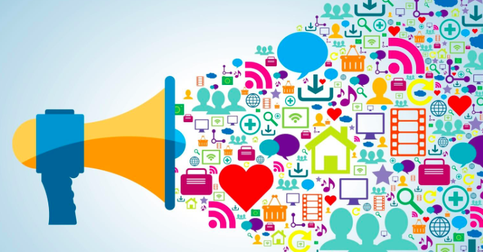

L’influence de l’arrivée des réseaux sociaux en politique.
Les réseaux sociaux et la politique
De nos jours,les réseaux sociaux sont devenues des outils essentiels dans la politique et plus particulièrement dans la communication de ces derniers. Lorsqu’on parle de réseaux sociaux, on voit souvent les grands sites et les grandes applications comme Twitter, Facebook Instagram ou encore TikTok, mais en réalité les réseaux sociaux ne sont, au final, qu’un groupe de personnes ayant au moins un but en commun. Un groupe d’amis est déjà en soit, un réseau social.De par ce fait des questions peuvent se poser. Il est donc légitime de se demander en quelle mesure les réseaux sociaux et la politique sont liés. L'article de Frédéric.
Exemple concret
Barack Obama, l’ancien président des États-Unis est un exemple, si ce n’est l’exemple de cette situation. Il est considéré comme un pionnier des réseaux sociaux en politique, car lors de sa première élection présidentielle il était l'un des président les plus présent sur les réseaux sociaux pour garder contact avec le peuple. Aujourd’hui, tous les grands politiques possèdent un compte twitter, même si celui ci est gérée par un Community manager pour la plupart (sauf rare exception comme Donald Trump), tout d’abord pour éviter une erreur de leur parts et épargner leurs temps, mais surtout afin d’améliorer leurs images auprès des électeurs. Il est donc clair que les réseaux sociaux et la politique on sont au moins liés, et ils sont peut-être même devenus complémentaires. L'article de Martin.
L'influence sur le monde
Dès lors, on peut aussi se demander à quel point ils peuvent influencer le peuple. En Russie, il a été question de hackers ayant agi en faveur de la campagne présidentielle de Donald Trump. Ces hackers ont piratés les mails de 7 responsables du parti démocrate (environ 20 000), mais aussi les mails de John Podesta, le directeur de l’équipe de campagne d’Hillary Clinton. Certain de ces mails étant plus ou moins néfastes à la campagne électorale de Hillary Clinton et donc positif à celle de Donald Trump. Des soupçons légitimes ont donc été porté envers ces hacks, beaucoup de personnes pensant que ces hackers Russes était à la solde du gouvernement Russe afin de faire gagner les élections présidentielle à Donald Trump. L'article de Djibril.
Enfin les réseaux sociaux sociaux peuvent servir une propagande pour certaine communautés afin,de plusieurs façon, de changer l’avis des gens ou simplement de se faire apprécier et d'enrôler des personnes. On peut penser au groupe terroriste ISIS faisant des vidéos sur le réseau sociale TikTok , en adoptant les codes de ce dernier afin d’enrôler des personnes , comme ils pouvaient déjà le faire sur facebook en cherchant le profil de personne faible ou déprimée et en faisant peu à peu via des discussion entendre le fait qu’ils seraient enfin accepter chez ISIS et que leur vie aurait enfin un sens. Ou même la propagande de certain pays en dictature ou considérée comme telle comme la Chine ou la Corée du sud ,ou des émissaires de ces pays promeuvent ce dernier en le défendant sur certain aspects vivement critiqué ou en diffusant des fake news.
Conclusion
Enfin, il apparaît que les réseaux sociaux sont devenus une méthode cruciale pour les politiques afin de communiquer avec les jeunes électeurs. De plus, depuis ces dernières années les jeunes adultes et les citoyens en général regardent moins la télévision : il fallait donc aux personnalités politiques une nouvelle manière d’atteindre les électeurs. Les réseaux sociaux ne sont pas encore politisés, mais dans la mesure où les politiques ont désormais accès aux réseaux sociaux, il est possible qu’à terme, les réseaux se politisent plus qu’ils ne le sont déjà.